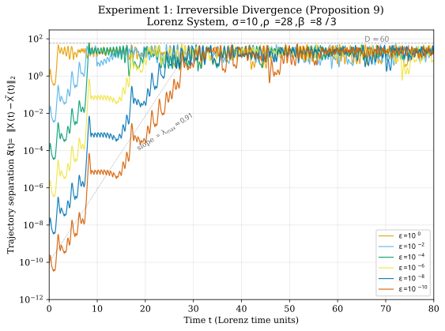
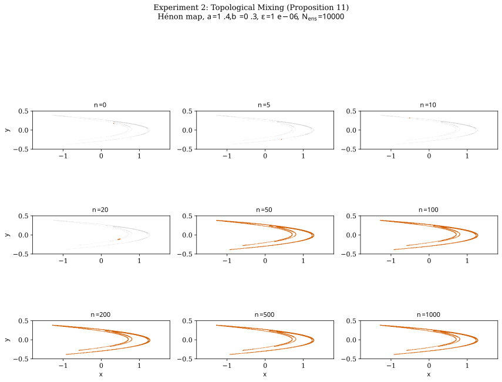
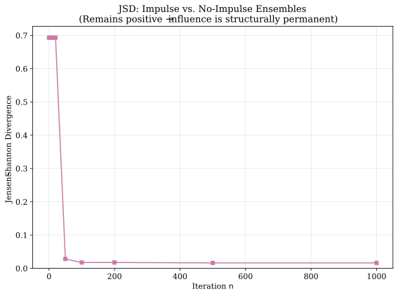
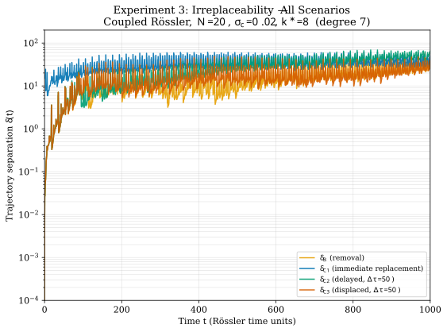
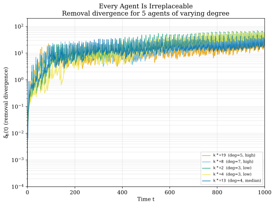

Notes 01-04 walked
through the paper's theoretical structure: axioms, proofs, refutations, and consequences. This
supplement presents the numerical experiments that verify the deductive chain.
What These Experiments Do and Do Not Show
We select dynamical systems that satisfy the paper's axioms and verify
numerically that the predicted phenomena—irreversible divergence, global permeation,
irreplaceability—occur as the theory requires.
These experiments validate axioms \( \Rightarrow \) theorems. They do
not establish real world \( \Rightarrow \) axioms. Whether human
societies satisfy these axioms remains an open empirical question.
All code uses fixed random seeds (master seed = 42) and is fully reproducible. Source code
and raw data are available at the Zenodo repository accompanying the paper.
Proposition 10: any non-zero impulse
creates a permanent trajectory separation that never converges to zero.
Setup
The Lorenz system (\( \sigma = 10, \rho = 28, \beta = 8/3 \)) satisfies Axiom 1 (smooth
manifold, locally Lipschitz vector field) and Axiom 3 (\( \lambda_{\max} \approx 0.906 \)).
The attractor is bounded with empirically measured diameter \( D \approx 59.7 \).
After discarding a transient of \( t = 100 \) time units, we record a reference state
\( X_0 \) on the attractor. Two trajectories are integrated—one from \( X_0 \) (null
intervention) and one from \( X_0 + (\varepsilon, 0, 0) \) (impulse)—for \( T = 80 \) time
units using RK45 with tolerances \( \mathit{rtol} = 10^{-13} \), \( \mathit{atol} = 10^{-14} \).
Six perturbation magnitudes are tested:
\( \varepsilon \in \{10^{0}, 10^{-2}, 10^{-4}, 10^{-6}, 10^{-8}, 10^{-10}\} \).
Result
Every perturbation magnitude produces exponential growth followed by saturation at the
attractor diameter. No perturbation decays to zero, including the smallest
(\( \varepsilon = 10^{-10} \)), which saturates at \( \max \delta \approx 53.7 \)—comparable
to the attractor diameter \( D \approx 59.7 \).

Figure 1. Experiment 1: Irreversible divergence in the Lorenz system.
Trajectory separation \( \delta(t) \) for six perturbation magnitudes \( \varepsilon = 10^{0} \) to \( 10^{-10} \).
All curves exhibit exponential growth (reference slope \( \lambda_{\max} \approx 0.91 \) shown as dashed line)
followed by saturation at the attractor diameter \( D \approx 60 \). No impulse is attenuated to zero.
Numerical integrity was validated by comparing the \( \varepsilon = 10^{-10} \) run under RK45
against DOP853 (\( \mathit{rtol} = 10^{-14} \), \( \mathit{atol} = 10^{-15} \)). Within the
exponential growth regime (\( \delta < 10^{-4} \)), the maximum relative error between the
two \( \delta(t) \) curves is \( 8.9 \times 10^{-4} \), confirming that the observed growth
is genuine Lyapunov divergence rather than numerical error amplification.
A direction scan over 50 random perturbation directions (all with \( \|I\| = 10^{-6} \))
confirms that all directions produce exponential growth and saturation. 20 of 50 exhibit
transient contraction before growth, illustrating the "generic" qualifier in
Proposition 10(b). The mean finite-time growth rate is \( 0.41 \pm 0.23 \), below the
infinite-time \( \lambda_{\max} \approx 0.91 \)—expected behavior for finite-time Lyapunov
exponents along non-optimal directions.
What It Means
Within the Lorenz system: Proposition 10(a)-(c) is confirmed—every nonzero impulse produces
permanent trajectory separation. No minimum impulse threshold exists below which influence is
"rounded away," directly refuting Counter-Argument 1 (noise attenuation) and Counter-Argument 4
(truncation fallacy). The Lyapunov prediction horizon
(\( T_L \sim 1/\lambda_{\max} \approx 1.1 \) Lorenz time units) is far shorter than the
saturation time, confirming the separation of intervention from control
(Note 03, Section 3).
Experiment 2: Topological Mixing (Hénon Map)
What It Tests
Proposition 12: the influence of
any impulse eventually reaches every region of the state space—and remains structurally
embedded, not merely transiently spread.
Setup
The Hénon map (\( a = 1.4, b = 0.3 \)) satisfies Axiom 3
(\( \lambda_{\max} \approx 0.42 \)).
Caveat on Topological Mixing
Topological mixing of the Hénon attractor at these parameters is supported by extensive
numerical evidence but is not rigorously proven. The Benedicks-Carleson theorem
establishes the existence of a strange attractor with an SRB measure for a positive-measure
set of parameters near \( (a=2, b=0) \), but whether \( (1.4, 0.3) \) lies in this set
remains open. This experiment demonstrates the qualitative mixing behavior; it does not
constitute a proof that the Hénon map satisfies the mixing axiom.
An ensemble of \( N_{\text{ens}} = 10{,}000 \) points is initialized in a disk of radius
\( \varepsilon = 10^{-6} \) centered on an attractor point \( X_0 \). All points are iterated
under the Hénon map, and coverage of a 5,000-point reference attractor is measured at each
snapshot via a nearest-neighbor metric.
Result
At \( n = 0 \) the ensemble is a point-like cluster; by \( n = 50 \) it covers the full
visible structure of the attractor. The nearest-neighbor coverage ratio reaches
\( C(50) = 0.926 \) and stabilizes near \( C(1000) = 0.932 \). The ceiling below 1.0 is a
finite-ensemble artifact: 10,000 points cannot densely fill a fractal of dimension
\( \approx 1.26 \) at the resolution of the reference set.

Figure 2. Experiment 2: Ensemble spreading under the Hénon map.
\( N_{\text{ens}} = 10{,}000 \) points initialized in a disk of radius \( \varepsilon = 10^{-6} \) (orange)
overlaid on the reference attractor (gray). By \( n = 50 \) the ensemble covers the full attractor structure,
verifying global permeation (Proposition 12).
To test whether the influence is structurally permanent (not merely spatially spread),
two ensembles are compared: one initialized at \( X_0 \) (null) and one at
\( X_0 + (0.01, 0) \) (impulse). The Jensen-Shannon divergence (JSD) between their occupancy
histograms starts at \( \ln 2 \approx 0.693 \) (fully distinguishable) and decreases as both
ensembles spread, but settles at \( \text{JSD} \approx 0.016 > 0 \) after \( n = 100 \).

Figure 3. Jensen-Shannon divergence between impulse and null ensembles.
JSD starts at \( \ln 2 \) (fully distinguishable) and decreases as both ensembles spread,
but remains positive (\( \approx 0.016 \)) at full coverage. The impulse is structurally
embedded in the attractor's measure, not a transient.
What It Means
The positive residual JSD at full coverage confirms that the two distributions are
permanently distinguishable: the impulse is structurally embedded in the attractor's
measure, not merely a transient amplitude difference. This is the coffee-and-milk analogy
from Note 01, quantified: the milk's whiteness
(signal amplitude) vanishes, but the molecular arrangement (JSD \( > 0 \)) is permanently
and globally altered.
Corollary 11 (no replaceable
individual), Proposition 15 (persistence
of influence beyond death), and Remark 17
(chaos survives dimension reduction). This experiment also directly tests
Counter-Argument 2 (historical homeostasis).
Setup
Twenty Rössler oscillators (\( a = 0.2, b = 0.2, c = 5.7 \)) are coupled on a
Watts-Strogatz network (\( k = 4, p = 0.3 \)) with diffusive coupling
\( \sigma_c = 0.02 \). The system lives in \( \mathbb{R}^{60} \) and satisfies Axiom 1
(smooth ODE, locally Lipschitz) and Axiom 3: the maximal Lyapunov exponent of the full
system is \( \lambda_{\max} = 0.082 > 0 \), computed via the Benettin algorithm with
analytically derived Jacobian over \( T = 1{,}000 \) time units.
The coupling strength \( \sigma_c = 0.02 \) was selected to ensure that chaos is preserved
(\( \lambda_{\max} > 0 \)) and oscillators interact meaningfully but are not synchronized
(mean pairwise Pearson correlation \( = 0.53 \)).
Five scenarios are tested for each of five target agents \( k^* \) (two high-degree,
two low-degree, one median-degree):
A (baseline): All 20 oscillators evolve normally.
B (removal): Agent \( k^* \) is permanently deleted; the system evolves
in \( \mathbb{R}^{57} \).
C1 (immediate replacement): At \( t = 0 \), \( k^* \) is replaced by
a new oscillator with identical parameters and coupling but a different initial condition.
C2 (delayed replacement): \( k^* \) is removed at \( t = 0 \) and a
replacement is inserted at \( t = \Delta\tau \)
(\( \Delta\tau \in \{10, 50, 200\} \)).
C3 (displaced replacement): Same as C2, but the replacement connects
to different neighbors in the network (same degree, different nodes).
Result
All scenarios diverge. Every scenario—from the most idealized replacement (C1)
to the most realistic (C3)—produces macroscopic, permanent divergence (max \( \delta \) between
40 and 75, comparable to the system's attractor scale). No agent is replaceable, regardless of
network degree.

Figure 4. Experiment 3: All replacement scenarios diverge.
Trajectory separation for target agent \( k^* = 8 \) (degree 7) under removal (B),
immediate replacement (C1), delayed replacement (C2, \( \Delta\tau = 50 \)), and
displaced replacement (C3, \( \Delta\tau = 50 \)). All saturate at the attractor scale;
no scenario restores the original trajectory.
Persistence of past influence. The metric
\( \Delta_{\text{persist}}(t) = \|X_B(t) - \pi_{-k^*}(X_{C1}(t))\| \) measures whether the
surviving agents are in different states depending on whether \( k^* \) was removed or replaced.
For all five agents, \( \Delta_{\text{persist}}(t) > 0 \) at all \( t > 0 \) and grows to
macroscopic values. The removed agent's past influence is permanently encoded in the surviving
agents' states—it cannot be erased by inserting a replacement.
Delay sweep. For all five agents and all three delay values
(\( \Delta\tau \in \{10, 50, 200\} \)), the trajectory separation under Scenario C2 remains
macroscopic (range: 12.2-53.1), with no systematic return toward zero. The timing of
replacement does not restore homeostasis.
Lyapunov survival. Removing agent \( k^* = 8 \) from the 20-oscillator
system yields a 19-oscillator system with \( \lambda_{\max} = 0.053 > 0 \). Chaos persists
in the reduced system, consistent with Remark 17 (robust chaos).

Figure 5. Every agent is irreplaceable.
Removal divergence \( \delta_B(t) \) for five target agents of varying network degree.
Both hub and peripheral agents produce macroscopic, permanent divergence.
Irreplaceability is universal, not degree-dependent.
What It Means
Within the coupled Rössler system:
Corollary 11 confirmed: no replacement—whether immediate, delayed, or
displaced—restores the original trajectory.
Proposition 15 confirmed: past influence persists in the surviving
agents' states beyond the removed agent's lifetime.
Counter-Argument 2 refuted: historical homeostasis does not hold, even
under the most favorable conditions (immediate replacement with identical functional
role and network position).
The Real World Can Only Diverge Further
Scenario C1 is the most generous possible replacement: identical parameters,
identical coupling, identical network position, instantaneous substitution. It still
produces macroscopic divergence. In reality, replacements differ in capability, timing,
and context simultaneously. If the idealized case fails to restore the trajectory, the
realistic case can only fail harder.
Verification Map
The following table maps each experiment to the paper's propositions and counter-arguments.
Experiment
Proposition
Counter-Arg.
Status
1 (divergence)
Prop. 10, Cor. 11
CA1 (noise), CA4 (truncation)
Pass
1 (direction scan)
Prop. 10(b)
—
Pass
2 (mixing)
Prop. 12
CA1 (structural embedding)
Pass*
3 (removal)
Prop. 15, Cor. 16
—
Pass
3 (replacement C1-C3)
Cor. 11
CA2 (homeostasis)
Pass
3 (persistence)
Prop. 15
CA1, CA2
Pass
3 (Lyapunov survival)
Remark 17
—
Pass
*Depends on the numerically supported but unproven topological mixing of the Hénon
attractor at \( (a = 1.4, b = 0.3) \).
Limitations
These limitations are not caveats added for politeness. They define the exact boundary of
what the experiments establish.
Scope boundary. These experiments verify the deductive chain under the
axioms; they do not establish that any real-world system satisfies the axioms.
Hénon mixing. Experiment 2 depends on the topological mixing of the
Hénon attractor at \( (a = 1.4, b = 0.3) \), which is numerically supported but not
rigorously proven.
Coverage ceiling. The 93% coverage in Experiment 2 reflects
finite-ensemble sampling on a fractal (dimension \( \approx 1.26 \)), not a failure of mixing.
Finite-time growth rates. The mean measured growth rate in Experiment 1
(\( 0.41 \)) is below \( \lambda_{\max} \approx 0.91 \). This is standard behavior for
finite-time Lyapunov exponents along non-optimal directions and does not indicate a
discrepancy with the theory.
Scenario ordering. The predicted ordering
\( \delta_{C3} \geq \delta_{C2} \geq \delta_{C1} \) is not strictly observed after
attractor-scale saturation. All scenarios produce comparable divergence; the qualitative
conclusion (all replacements fail) is robust.
System scale. \( N = 20 \) oscillators is far below the dimensionality
of any real social system. This is a consequence of the scope boundary: we verify the
mathematics, not the sociology.